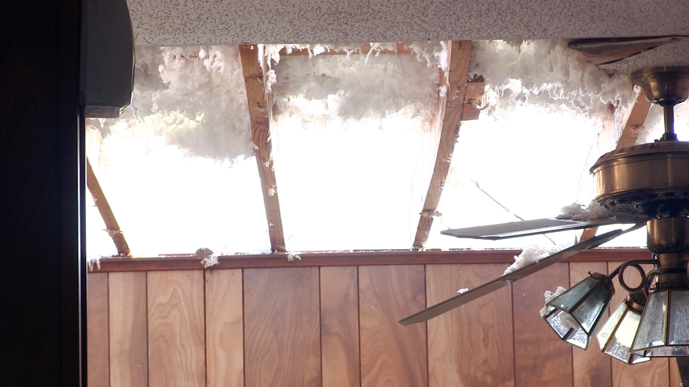

Officials from the National Weather Service in Little Rock were in White County, Arkansas, yesterday surveying damage from what they confirmed were tornados.
The report from their investigation officially determined that an EF1 tornado damaged the town of Higginson just a few miles southeast of Harding University. Another tornado, rated as an EF2, impacted the nearby town of Kensett.
Dennis Cavanaugh and Charles Dalton represented the Weather Service to investigate the scene. They arrived in Higginson at 9am, where emergency managers took them through the damage. Dalton told HU16 News their role after the storm involved "coming in after the fact, after the storms have gone through, to access the damage that we're seeing." After spending several hours looking at the damage, they released a report officially confirming the tornado.
To make that confirmation, officials needed to check to see if the damage was done by a tornado or by winds coming in a straight line out of the storm. "Things laying in different directions" is what they're looking for, Dalton said. "Like the house that we just came from, around the corner, the roof ls laying in one direction. But if you go around the backside of the house, there's insulation, and mud, and dirt, and stuff like that, that was thrown back at the backside of the house. So that's indicative of a real dramatic and strong wind shift after the damage occurs, which is indicative of a tornado."
He was referring to a home on Holiday Terrace Street in Higginson. The house's roof was completely removed by the storm, leaving insulation covering both the inside and the surrounding yard.
The rating of the tornado is determined by what types of damage they see. Dalton explained that, so far, they worst they've seen was "large sections of roofs lifted off of homes. There’s been no total destruction like you would see with really strong violent tornados."
Harding's HU16 provided live coverage of Tuesday's storm on White County Cable and on their website. I joined HU16's Bo Smith who led the live alert. A camera at the Harding baseball field captured the storm as it moved in, and radar gave viewers a look at the tornado's location.
The tornados touched down in the evening well after a Tornado Warning was issued by the National Weather Service.
Timeline
5:04pm – First Tornado Warning
6:33pm – Tornado Warning for White County
6:37pm – HU16 Goes on the Air
6:48pm – Warning Extended
6:58pm – Warning Extended
7:03pm – Tornado Touches Down in Higginson
7:03pm – HU16 Goes Offline
7:05pm – Tornado Lifts Up
7:05pm – HU16 Returns to Broadcasting
7:07pm – Tornado Touches Down in Kensett
7:14pm – Tornado Warning Extended
7:20pm – Higginson, Kensett, and Searcy Removed from Tornado Warning
7:39pm – HU16 Concludes Coverage
7:42pm – Tornado Warning Canceled for White County
9:00am – Weather Service Arrives on Scene
Officials also emphasized being prepared for the next storm. "This is a great time to reiterate the importance of having ways of receiving warning information," Charles Dalton added.
Ways to receive warnings include cell phones, local TV and radio stations, or a Weather Radio with batteries, which will sound an alarm when a warning is issued, even if the power is out in the middle of the night.
And after this week's storms, many White County residents are thankful for those warnings.